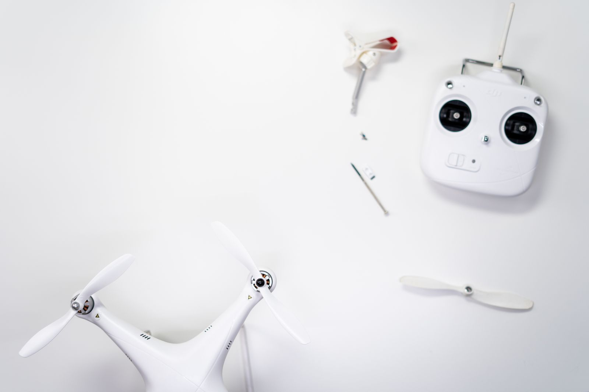

A university team, from laptop-and-hope to a station that runs itself
Client
University UAS team, NL
Aircraft
3 research multirotors, PX4
Links
915 MHz telemetry · 2.4 GHz control
Delivered
2025 · station + pipeline

The ask
A university UAS laboratory flying real research missions on a safety case assembled from screenshots of a ground-station laptop. Flights were flown by whoever was free, logged if someone remembered, and reviewed never. The lab coordinator’s question was blunt: “Can you make every flight answerable?”
What I did
Built a fixed ground station around QGroundControl with a measured link budget for their field’s far corner, an unattended log pipeline that pulls every ULog off the aircraft the moment it lands, and a one-page pre-flight card the crew actually uses. The station arms nothing, flies nothing — it witnesses everything, which is the job.
The outcome
Every flight since handover has a complete log, a named pilot and a review entry. The safety case is now generated from the pipeline instead of assembled by hand, and the lab’s insurer accepted it without a follow-up question. Two vibration trends have been caught in review before they became incidents.
LOG NOTE — First month after handover: 31 flights, 31 logs, 0 screenshots in the safety file.